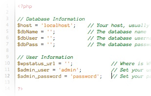
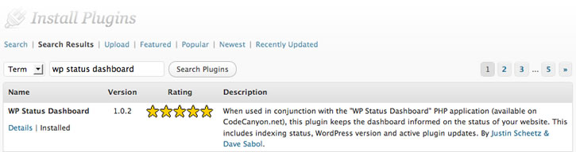
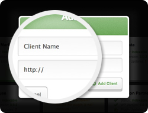
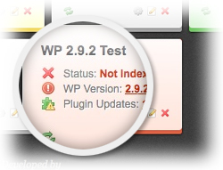
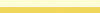

“WordPress Status Dashboard” Documentation v1.35
“WordPress Status Dashboard”
Updated: 5/1/2010
Authors: MindCork
Thank you for purchasing our product. If you have any questions that are beyond the scope of this help file, please feel free to contact us via our support system. Thanks so much!
Table of Contents
- Technical Requirements
- Installation
- Usage
- Upgrading
- Troubleshooting
A) Technical Requirements - top
The WP Status Dashboard requires a few things to work:
- PHP5 or above. The dashboard uses cURL to read from your WordPress sites, and for best results we highly suggest using PHP5 or above.
- MySQL database. To store the data, of course.
- Clients using WordPress. This one is pretty self explanatory. :)
B) Installation - top
Installation consists of a few quick steps to get you up and running:

- Create the Database. You'll need to create a database from which the WP Status Dashboard runs. If you are unsure of how to do this, contact your hosting provider and they should be able to help you.
- Import the SQL File. We've provided an SQL file that you can use to set up the proper table structure for the database you just created. If you are unsure of how to do import an SQL file, contact your hosting provider and they should be able to help you.
- Edit the "config.php" File. Within the "WP_Status_Dashboard" folder, locate the "/includes/config.php" file and edit the appropriate information. You'll need to add the database name, user and password that you just created. Then edit the administrator's username and password. You'll use these credentials to view your new dashboard.
- OPTIONAL: Enter a Security Key. New since v1.1 is the security key feature. Enter a random string of letters and numbers and then enter that same key on each of your clients' sites (via the plugin settings panel). This will prevent any other WP Status Dashboard user from entering your clients' websites into their dashboard. NOTE: This feature requires you to be running the v1.1 WordPress plugin as well!
- Upload the Files. Upload the entire directory to a location of your choice. We would suggest using a subdomain such as “dashboard.domain.com” or “clients.domain.com”.
C) Usage - top
- Visit your Dashboard. At this point, you'll want to visit the dashboard to make sure it's running properly. Be sure there are no database errors displaying and that your username/password works correctly.
- Add your First Client. Before adding a client to the dashboard, each client needs to have the WP Status Dashboard plugin installed and activated.
The easiest way to install the plugin is through the built-in "Install Plugins" functionality within WordPress. Simply search for "WP Status Dashboard" and install it from there.

If you are running an older version of WordPress, or simply prefer to upload the plugin manually, the plugin zip file is included in the /WP_Plugin/ folder. Simply upload it to WordPress using their automated system—or for older versions of WordPress, you'll need to upload it manually via FTP.Once the plugin is installed on your client's site, you can begin to add their site information to your dashboard; the process for doing so is pretty simple. Click on the "Add Client" button. Doing so opens a modal window that asks you to enter two key pieces of information: client name and the website's URL (don't forget the http://).
Once you enter the information, and click the "Add Client" button. Repeat this process for each client that you want to track.
Once the client addition process is completed you can begin to actively monitor and manage your client sites.
- Manage your Sites. Each client site provides you with the ability to monitor a number of critical factors related to the success of your site. These include:

- Status - whether your site is indexable by search engines or not
- WP Version - the version of WordPress the site is running
- Plugin Updates - the number of "active" plugins on the site that have an update available
Across the bottom of each client "block" there are a number of additional icons to make interacting with the client site more useful and intuitive. These include:
- Refresh - Refresh the specific client information to make sure the most current details are being displayed
- WordPress Admin - A direct link to the site's WordPress admin panel
- Edit Client Site Info - Change the client's name and/or URL
- Delete Client Site - Completely remove the client's site from the dashboard
Each client block will also display a different color depending on the status of the site being monitored. The statuses are reflected in each client block background colors as follows:
- - The site IS indexable, running the most current version of WordPress, and all plugins are updated.
-  - There is a general problem with the plugin/site.
- - The site IS NOT indexable.
- - The site is IS indexable, but either WordPress or one or more plugins need to be updated.
- Keep Your Dashboard Updated. On load and/or refresh, the application will check to confirm that the WP Status Dashboard is running the most current version. This information will be displayed in the footer. If an update for is available a download link will be provided. A link to the most updated plugin is also provided.
D) Upgrading - top
Upgrading from v1.1
- Edit the new "config.php" File. Within the "WP_Status_Dashboard" folder, locate the "/includes/config.php" file and edit the appropriate information. You'll need to add the database name, user and password that you just created. Then edit the administrator's username and password. You'll use these credentials to view your new dashboard.
- OPTIONAL: Enter a Security Key. New since v1.1 is the security key feature. Enter a random string of letters and numbers and then enter that same key on each of your clients' sites (via the plugin settings panel). This will prevent any other WP Status Dashboard user from entering your clients' websites into their dashboard. NOTE: This feature requires you to be running the v1.1 WordPress plugin as well!
- Upload the files. At this point, all you need to do is upload all of the files, overwriting your old ones. This will complete the upgrade.
Upgrading from v1.3
- Upload the files. Upload all of the files to their appropriate folders (following the folder structure of the 1.3-1.35 update zip), overwriting your old ones. This will complete the upgrade.
E) Troubleshooting - top
Known Issues
- "Security Scan" Plugin. This plugin blocks the WordPress version. If you want to see your versions, simply deactivate this plugin. There is currently no workaround for this.
- Some sites work, some don't. More than likely you have plugin conflicts, or server permission issues. If you're sure that the plugin is installed and the security key is entered correctly, try deactivating all other plugins. If this works, then you know you have a plugin conflict. Simply reactivate them until the issue resurfaces and you'll know which one is the culprit!
- Still having issues? Submit a ticket to our support system: http://mindcork.ticksy.com
Once again, thank you so much for purchasing our product. We are to help you if you have any questions relating to this product. No guarantees, but we'll do our absolute best to assist. If you have a more general question relating to the products on CodeCanyon, you might consider visiting the forums and asking your question in the "Item Discussion" section.
Go To Table of Contents